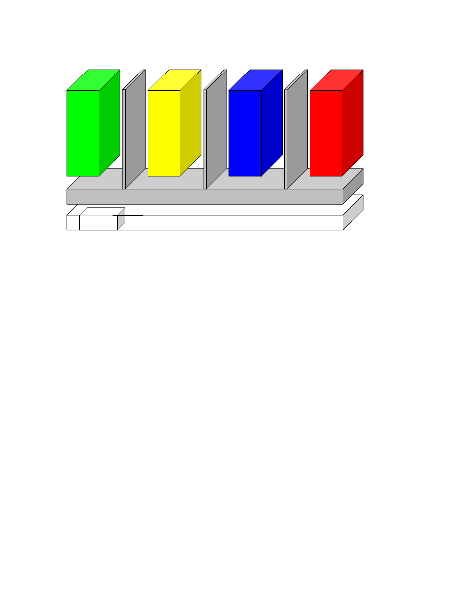
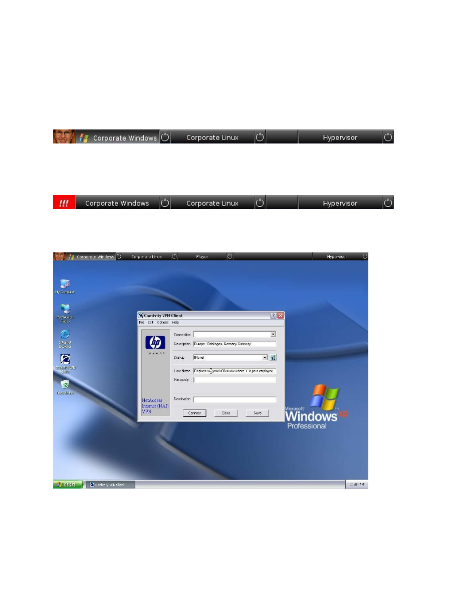
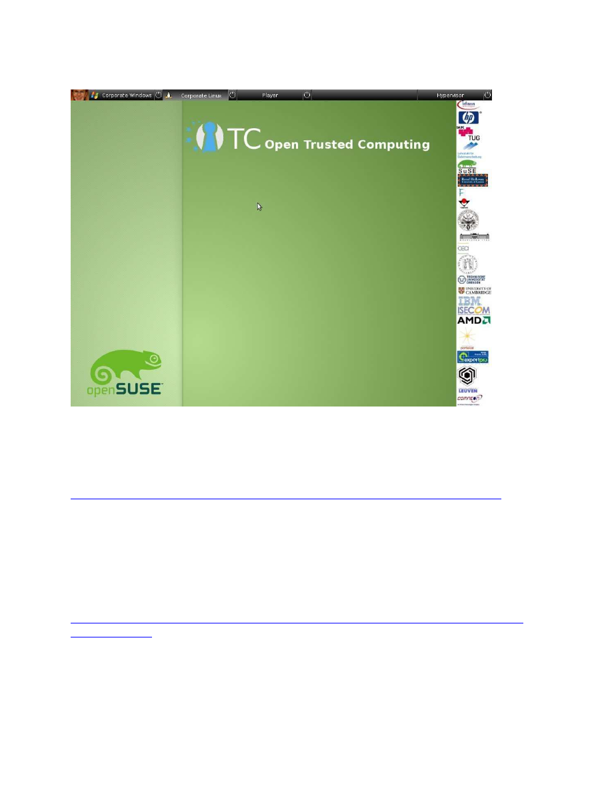

1
OpenTC Newsletter
March 2008
From the Open Trusted Computing (OpenTC) research project, sponsored by the European
Union.
In this special TRUST2008 conference issue:
•
Editorial: Protecting private and corporate PCs
•
“Corporate Computing at Home” – the scenario of the second OpenTC proof-of-concept
prototype
•
A quick walkthrough of the second OpenTC proof-of-concept prototype
Editorial: Protecting private and corporate PCs
By: Arnd Weber, Dirk Weber, ITAS, Forschungszentrum Karlsruhe, Germany
Dear Reader,
The OpenTC consortium’s first prototype was described in the January 2008 issue of the
OpenTC newsletter. It essentially comprised a hypervisor with a compartment for carrying out
Private Electronic Transactions (PET). The compartment sand-boxed a browser for con-
ducting authorized transactions such as a bank transfer. By isolating that compartment from
other compartments used for daily operations such as general web-surfing, and by employing
remote attestation, we demonstrated that Trusted Computing (TC) can be used to provide
improved protection against attacks such as phishing.
In this issue, the OpenTC consortium presents its second proof-of-concept prototype which
generalises this approach. We developed a scenario called Corporate Computing at Home.
We assume an employee using an operating system controlled by his or her corporate em-
ployer which runs alongside one used for personal, non-business tasks. Both operating
systems execute simultaneously in isolated compartments on the same physical PC. The
employer needs assurance that his execution context and applications run in a well-known and
verified environment, while the employee may use other compartments as he pleases.
The first article describes this scenario and its benefits in some detail. While specifying the
prototype, we aimed at a user interface that allows corporate administrators as well as non-
technical employees to manage such a system and to support hosting a mainstream commer-
cial operating system. The scenario defines a viable way to handle “known good integrity
values” for remote attestation. It also shows a way of using TC without remote attestation,
employing local attestation only to protect the end user.
2
The second article was written by Dirk Kuhlmann, OpenTC’s technical lead. His article: “A
quick walkthrough of the second OpenTC proof-of-concept prototype” describes the con-
sortium’s recent achievements, outlining how several components “under the hood” have
been improved, compared to the PET.
The consortium will present the Corporate Computing at Home prototype at the Trust2008
event in Villach, Austria, in March 2008. Following this event, we intend to make the imple-
mentation available on the project website (http://www.opentc.net/) as soon as possible. We
will keep you informed in the OpenTC newsletter.
Contact: {arnd.weber, dirk.weber} (at) itas.fzk.de
Acknowledgements: Our thanks go to Konrad Eriksson, Alison Hepper, Stephane Lo Presti
and Gianluca Ramunno for their help in preparing this issue.
“Corporate Computing at Home” – the scenario of the second OpenTC
proof-of-concept prototype
By: Dirk Weber and Arnd Weber, ITAS, Forschungszentrum Karlsruhe, Germany
Introduction
The scenario and use cases for Corporate Computing at Home emerged from discussions with
our industrial partners who highlighted the following requirements for a new, appealing busi-
ness application:
•
A corporation wishes to secure its standard execution environment, consisting of operat-
ing systems, applications and data. It wants to safeguard these corporate resources against
accidental modifications or reconfigurations by their employees that would reduce the
protection level (e.g., through surfing privately on insecure Websites or running insecure
code, either accidentally or for testing purposes).
•
Employees need to run corporate applications at home or while travelling. However, they
would also like to run their own applications such as games, and they may wish to handle
their private data (emails, movies etc). The corporation might endorse such ‘reasonable
private use’ of their equipment, provided that the corporate execution environment is kept
safe. Also, employees might use their privately owned PCs for performing corporate
tasks, e.g., by carrying an entire corporate compartment on a USB stick that can be mi-
grated between a corporate machine and a private one.
As reflected in the consortium’s “Strategy” document [1], the TC approach faces a challenge
with regard to maintaining databases with “known good integrity values”. Knowledge of
these values allows a relying party to check whether a computer requesting access is compli-
ant with specific requirements or not. An initial simplification of our scenario assumes that
the employer provides its employees with PCs and maintains a database with “good values”
for corporate equipment.

3
TPM
Computer Hardware
OpenTC Layer
P
ri
v
a
te
S
e
c
u
ri
ty
C
o
rp
o
ra
te
O
th
e
r
Is
o
la
ti
o
n
Is
o
la
ti
o
n
Is
o
la
ti
o
n
Fig. 1: Corporate Computing at Home architecture overview.
•
“Corporate” designates a compartment used by the employee for corporate purposes, e.g., with a corporate
standard configuration of a mainstream operating system (OS).
•
“Security” compartments may contain scanners, firewalls, or auditing instrumentation.
•
“Private” denotes a compartment used for the employee’s private purposes.
•
“Other” compartments may contain a variety of OS and applications (see text).
Provided that the employer configures the machine, he can also seal the corporate execution
context cryptographically against a specific configuration of the OpenTC layer, making it
accessible under this configuration only. This is a viable mechanism to avoid remote
attestation, allowing using TC even in the absence of global databases with ‘known good
values’ and platform certificates. Still, migration is possible: corporations might share their
definition of known-good configurations with their business partners, thus creating a business
case for creating and maintaining a common database or for platform certificates.
There still remains the issue of managing a Corporate Computing at Home system, additional
costs for maintenance, software, user qualification etc. These costs have to be weighted
against the benefits of deploying the approach. Keeping in mind that usability for employees
and administrators is a key cost factor, we not only addressed the functionality, but also
layout characteristics of the user interface for the prototype, striving to make it as simple as
possible.
Overview of the specification
Figure 1 shows an overview of the OpenTC architecture applied to the Corporate Computing
at Home scenario. The OpenTC layer between the hardware and the compartments provides
security services and isolation. A corporation can shield its compartment from other execution

4
environments on the same computer. The user has an operating system (OS) provided and
configured by his corporation running in parallel to one used for his personal tasks. The
corporation can rely on the fact that its configuration runs in a well-known and attested
operating environment, and it can get assurance that its OS can be only used in accordance
with the corporate policies. In parallel, the user can run one or more compartments of his own.
More compartments may exist, e.g.:
•
for platform-wide security applications,
•
for games,
•
for security applications and services, e.g. for digital signatures or for the PET,
•
for browsers used for “surfing” potentially dangerous websites (such a compartment may
simply be deleted entirely after use, and re-instantiated again),
•
for software of unknown trustworthiness, for use or testing, in a private or business con-
text (such software can be executed in a dedicated compartment that works as a sandbox
that might be erased after use).
For convenience, the default configuration should assume that compartments are isolated. The
administrator may, however, configure paths for data exchange between compartments, e.g.,
for allowing security applications to inspect other compartments.
The handling of such a system is not straightforward for someone without specialist know-
ledge, be it an administrator or an end user. The additional functionalities increase the
complexity of the system, and managing these functionalities raises questions of usability.
The complexity of a computing system using TC in combination with a hypervisor and
running several, possibly different OS, may prove to be an entrance barrier – if the learning
curve is considered too steep or the cost-benefit relation too low, corporations may be re-
luctant to employ this technology. So, how can such a system be designed to be more easily
manageable?
Regarding the acceptance and manageability of such a system, the Institute for Technology
Assessment and Systems Analysis (ITAS) has specified a set of requirements. Although some
of them may sound trivial, they were elicited on a related requirement analysis. This process
consisted of a media review [3] and a small expert survey. Regarding the expert survey, eight
experts – administrators and security specialists from various German corporations – were
interviewed. The respondents were asked to read the introductory conceptual paper by Kuhl-
mann et al. [2] on the OpenTC architecture, and to comment on it in subsequent interviews.
The following conclusions were derived:
1)
The user interface should provide means to create a new compartment and delete an
existing one.
2)
The user interface should be graphic, for managing compartments easily, as opposed to
relying on old or new hotkeys.
3)
Information on the Trusted Computing Base (TCB) should be provided on the main
screen, and should be easily manageable, such as by pressing buttons with a mouse-click.
4)
If information on the status of a certain compartment or other component is to be provided
to the user, this should be done using easy-to-grasp graphic artefacts.
The design of the user interface required to select features that can be omitted from the
graphical user interface (GUI) as opposed to those that should be shown in a size-restricted
section of the display. This raises a number of issues; only two of which will be mentioned
here. The first concerns protection against mimicry: we have witnessed the emergence of

5
attacks where the GUI is used to fool users into believing that a given graphic element is
trustworthy, while it is in fact concealing an exploit. The second issue concerns the protection
of users against their own mistakes, as they might lose sight of their compartments. ITAS
specified a taskbar for easily managing the TC hypervisor, including a user-specified image
that is provided during installation. If the TCB is in a known state, the image will be unsealed
and displayed. If the TCB is in a different state, the image can not be decrypted and will
therefore not be displayed. This indicates that the TCB-components (including the GUI)
might have been tampered with. A first version of this taskbar has been implemented in the
Corporate Computing at Home proof-of-concept prototype by Hewlett Packard (Figures 2 to
5).
Fig. 2: OpenTC taskbar (cropped). It shows an unsealed image (personalised with a facial image by the authors),
and a pressed button (indicating the compartment currently being displayed on the remainder of the screen). The
taskbar provides graphic access to several compartments and to the TCB (hypervisor) control panel.
Fig. 3: OpenTC taskbar (cropped) with a red button indicating that the TCB is not in a known state and that
unsealing the image has not been possible.
Fig. 4: OpenTC with its status bar and a compartment running Windows XP.

6
Fig. 3 shows an example of a failed unsealing procedure. The code or the configuration of the
TCB is no longer in a known state; nothing that is displayed can be trusted. Figs. 4 and 5
show the task bar in the context of different operating systems. We hope that this user
interface will help to make the OpenTC architecture easy to use by administrators and users.
Fig. 5: OpenTC with its status bar and a compartment running openSUSE Linux.
References:
[1] Dirk Kuhlmann: Technical Leader report on OTC Strategy. 2008.
http://www.opentc.net/deliverables2007/Open_TC_D01.2_Report_on_OTC_Strategy.pdf
[2] Dirk Kuhlmann; Rainer Landfermann; Harigovind Ramasamy; Matthias Schunter;
Gianluca Ramunno; Davide Vernizzi: An Open Trusted Computing Architecture — Secure
virtual machines enabling user-defined policy enforcement. 2006.
http://www.opentc.net/images/otc_architecture_high_level_overview.pdf
[3] Dirk Kuhlmann, Arnd Weber (eds.): Requirements Definition and Specification. OpenTC
Project Deliverable D02.2.
http://www.opentc.net/deliverables2006/OTC_D02.2_Requirements_Definition_and_Specific
ation_update.pdf
Note: We plan to provide more details of the requirements analysis, and the specification, in
the future.
Acknowledgements: Our thanks go to Dirk Kuhlmann, Matthias Schunter and Wolfgang
Weidner.
7
About the authors: Arnd and Dirk Weber work with the Institute for Technology Assess-
ment and Systems Analysis (ITAS) at Forschungszentrum Karlsruhe, which has become part
of the newly founded Karlsruhe Institute of Technology (KIT), Germany. The authors work
on the requirements and dissemination activities of the OpenTC project.
Contact: {arnd.weber, dirk.weber} (at) itas.fzk.de
A quick walkthrough of the second OpenTC proof-of-concept prototype
By: Dirk Kuhlmann, Hewlett Packard Laboratories, Bristol, UK
Introduction
OpenTC investigates how to enhance the trustworthiness and security of different types of
computing platforms – desktops, notebooks, servers, mobile and embedded – by combining
Trusted Platform technology (as defined by the Trusted Computing Group) and isolation
techniques offered by operating system virtualization layers (also called hypervisors or
Virtual Machine Monitors in this article). To structure the activities and to give all partners
clear goals to work towards, each OpenTC prototype is guided by a “theme” or application
scenario that is mapped onto a technical design and implementation.
The implementation is extended in gradual steps, allowing earlier scenarios to be mapped
onto later prototypes. From time to time, we capture a snapshot as proof-of-concept prototype
that is released to the public.
OpenTC's first prototype focussed on the protection of private information, essentially an
attempt at securing interaction with security-critical web-based services such as home
banking. The consortium implemented a number of building blocks such as measuring system
integrity during boot-up, separating execution domains for security critical and normal web-
browsing, and a proof-of-concept set-up for remote attestation. However, its main purpose
was to produce a conceptual prototype conveying several important core concepts (see the
January 2008 issue of the OpenTC newsletter about the PET). As a consequence, numerous
shortcuts had to be taken, and the result was quite rough around the edges.
We are still quite some way from a stable release, but the new snapshot already marks several
important improvements over the first one:
•
it reflects a common scenario from the corporate world,
•
it is built on a distribution that can be compiled and packaged from scratch (OpenSuse
10.3),
•
it allows for a uniform development environment (GNU Compiler Collection gcc/g++ 4.2)
for both hypervisor alternatives (L4 and Xen),
•
it provides a GUI that hides the underlying complexity, signals the platform's trust state,
and allows for intuitively easy switching between different roles/execution contexts,
•
it can host one or more instances of proprietary guest operating systems (Windows XP),
and
•
it comes closer to the goal of properly isolating security critical functions such as console
I/O and networking.

8
The purpose of this article is to review the motivation of the application scenario, to give an
outline of OpenTC's core components, describing the differences to the previous release, and
to provide some insight into the further direction of OpenTC's activities.
Corporate Computing at Home (CC@H)
OpenTC's activities beyond the first prototype centred around a scenario called Corporate
Computing at Home (it could also have been termed “Private Computing on Corporate
Platforms”.) It reflects the situation where employers tolerate, within reasonable limits, the
utilization of corporate equipment (in particular notebooks) for private purposes.
This liberal attitude is more common than one might think: as private life and work are ever
harder to separate, it has not gone unnoticed that employees tend to be more productive if
allowed to quickly resolve private matters even when at work. With the proliferation of
notebooks, the strategy of keeping a tight grip on the configuration is constantly waning,
while working equipment is increasingly hauled back and forth between home and work.
While conniving in the private use of their equipment, employers still want a safeguard that
their machinery remains fit for being used on their corporate network. With regard to malware
and other types of subversion, they should not be more exposed than they were before.
Corporate policies may call upon the good judgement of their employees to ensure this, e.g.,
by allowing access to email and documents as long as vetted applications are used, while
disallowing the installation and operation of arbitrary additional software, even for test
purposes. Quite frequently, however, this is exactly what the user wants or needs to do.
It should be emphasized that the interests of the corporation and the user are not in conflict.
Quite on the contrary, we may assume a cooperative attitude on both sides. A user empowered
to use corporate equipment for his own purposes would share the genuine interest of keeping
the corporate infrastructure safe and sane. The corporation, on the other hand, would endorse
the user's attempt to create a software environment tailored to his own needs. However, the
current end system architecture of “one active execution environment at a time” is not trusted
to assure that the corporate infrastructure will go unharmed when the user installs arbitrary
software, and it makes it hard to reconcile the needs of both parties.
Typical work-arounds are, for example, dual-boot configurations for separating corporate and
private partitions, or the creation of multiple user accounts and/or root file systems on the
same operating system (OS). They come with different inconveniences: long reboot delays
when switching execution contexts, as well as an incomplete separation due to resource
sharing or built-in relations of dominance and subordination between different partitions.
We need an architecture that allows simple and fast switching between two or more different
roles (such as private and corporate), mapping them to execution environments that, while
running in parallel, are protected against uncontrolled mutual interference or inference. It
should support multiple OS types, require minimal modifications to existing code bases,
clearly indicate the role and execution environment the user is working in at any given time,
and allow for policy-controlled information flow between compartments if necessary. It
should offer some grade of protection against tampering with its disk image even when not
active, and it should provide a means to prove its integrity to the user as well as to remote
nodes (such as the corporate VPN gateway). In a nutshell, this is the list of requirements that
guided OpenTC's work on the new proof-of-concept prototype.

9
Elements of the CC@H architecture
The CC@H architecture comprises the following main functional components:
•
boot-loaders capable of producing cryptographic digests for lists of partitions and arbitrary
files that are logged into PCRs of the Trusted Platform Module prior to passing on control
of the execution flow to the virtual machine monitor (VMM) or kernel it has loaded into
memory,
•
virtualization layers with virtual machine loaders that calculate and log cryptographic
digests for virtual machines prior to launching them,
•
a graphical user interface enabling the user to launch, stop and switch between different
compartments with a simple mouse click,
•
a virtual network device for forwarding network packets from and to virtual machine
domains,
•
basic support for binding the release of keys for encrypted files and partitions to defined
platform integrity metrics,
•
a dedicated virtual machine to demonstrate the graphics throughput using the example of
medium-resolution video.
We will discuss these components one by one; some additional characteristics of the proof-of-
concept prototype will be mentioned during our discussion.
1. Integrity checking during VMM boot-up
The current setup assumes the availability of an Infineon TPM v1.2 and BIOS support for
writing PCR values into the Trusted Platform Module (tweaks for TPMs from Atmel or
National Semiconductor should be relatively straightforward).
To explore the “dynamic root of trust” option introduced by the TPM 1.2 specification, the
current (Feb 2008) requirement is an AMD machine (Intel's architecture will be supported
once machines with the necessary features become available to us). Our setup was tested on
HP nx6175b and nx6325 notebooks with AMD Turion CPUs.
VMM integrity measurement during boot-up was already possible in the previous release, but
the functionality was quite constrained: the file systems for the VMM and the hosted VMs
were static ISO images that would be measured prior to being instantiated as copy-on-write
RAM disks. Any modifications to the RAM copies were lost when the machine was switched
off.
For the first prototype, this shortcut was acceptable for the purposes of demonstrating the
technical principle of software integrity measurement during boot time. For practical use,
however, it is clearly inadequate. OS file systems comprise both static and dynamic elements,
a fact which has to be accommodated by separating them, measuring the static parts during
start-up, and leaving integrity verification of (security-critical) dynamic data to non-mutable
mechanisms embedded in and measured with the static part.
Conceptually, this problem is addressed by storing static (read-only) data needed at boot time
and dynamic (read-write) data in different partitions. During the boot process, the two parti-
tions are mapped onto each other by means of an overlay file system. The resulting view
should be that of an ordinary, single partition. Please note that we only provide a very rough
first approximation of this concept in the current prototype: during the first instantiation of the

10
file system, all files reside in the read-only part and are included in the measurement. How-
ever, each time a file is modified by the OS, it is copied to the read/write part. From then
onward, the overlay file system always returns the ‘dynamic’ copy of the file (residing in the
overlay’s read/write part) to the OS. As a consequence, the current mechanism cannot catch
and measure modifications made by the OS during runtime. This will be improved either by
patching the modifications again in a controlled fashion or by properly splitting the static and
the dynamic data and storing them respectively onto the read-only and read/write parts.
There are two choices for TPM-supported boot. The first one is based on the TPM v1.1b-
defined concept using a static root of trust: starting from the root of trust for measurement in
the BIOS, all software components relevant for the boot procedure are measured, and the
values stored in corresponding TPM registers. As in the previous release, this is done by a
dedicated version of the GRUB boot loader. Alternatively, the OSLO boot loader, a software
module for the standard GRUB, can be employed to use the TPM v1.2-defined mechanisms
with dynamic root of trust (caveat: an AMD machine is required for this). To show both
alternatives, the CC@H prototype uses OSLO as an extension of TrustedGRUB. Trusted-
GRUB allows arbitrary additional files to be included in the measurement process during
boot-up, which have to be defined in a separate list. However, the current prototype does not
make use of this feature.
Future plans: The granularity for integrity measurements during boot-up could be improved
by adding an option that allows passing a list of files of arbitrary length that should be
measured as part of the boot-up process. This is a security-critical parameter and, therefore,
has to be measured and logged to the TPM itself before measuring the actual files it lists.
However, no further work will be spent on supporting “static root of trust”, since the dynamic
approach is more flexible and requires a smaller amount of data to be measured than the static
one.
We intend to focus on disk- and RAM-based approaches for measuring hypervisor and
controller domain integrity and on further reducing the amount of data that has to be measured
during start-up. We also plan to improve the overlay file system, e.g. by properly separating
static and dynamic elements and encrypting the dynamic partition. Decryption and mounting
would be made dependent on a positive integrity verification of the static, read-only part
consisting of the VMM, the kernel for the controller domain, and its initial RAM disk image.
2. Virtualization layers and virtual machines
Similar to the last release, there is a choice between two flavours of virtualization: the micro-
kernel-based L4 and the (currently) monolithic Xen. Both have their pros and cons.
L4 is a lean, minimalist system and ideal for OpenTC's investigations into hypervisors of
reduced complexity and a minimal trusted computing base in general. However, the current
L4 implementation only supports one CPU, so on an SMP or multi-core platform, the chances
are that only a fraction of the CPU power can be used. And while it has been practically
demonstrated that proprietary operating systems such as XP can be virtualized on an L4 based
hypervisor, L4's extensions employing hardware virtualization have not yet been made public
and can, therefore, not be used by OpenTC.
The second candidate, Xen, has gained a reputation for stability, SMP support and capability
of hosting MS-Windows in hardware-supported virtualization mode. However, it is currently
intrinsically reliant on Linux as a hosting environment for drivers and management software.

11
L4, on the other hand, can use Linux for this purpose (as we do), but also provides for more
generic, lightweight mechanisms. The XEN code base is quite large, which makes it more
difficult to validate its security and isolation properties.
To be able to experiment with hosting a proprietary OS alongside with Linux, Xen therefore
is the only option. If the aim is just to run multiple Linux instances in parallel, either L4 or
Xen can be selected. The file system content of L4's and Xen's Linux management domains
are mostly identical, give or take some configuration files and hypervisor-specific manage-
ment tools. We therefore use the same disk image for both hypervisors with dedicated
subdirectories for VMM-specific components.
Future plans: We will improve the integrity measurement functions for hosted instances
(VMs). The current mechanisms are far from perfect, since they still rely on ad-hoc exten-
sions of the VMM management software and VM launchers and use the hardware TPM.
Future versions will unify the measurement and launch process under an API common to L4
and Xen and utilize virtual TPMs.
3. Graphical user interface
Compared with the last proof-of-concept prototype, the user interface has been improved.
Following the requirements analysis mentioned in the previous article, we designed its look
and feel to match the typical user experience with graphic desktops. The OpenTC framework
claims a narrow region at the top of the screen for a proof-of-concept implementation of a
‘trusted task bar’. This bar allows compartments (dedicated VMs) to be launched and ter-
minated as well as switching between them. It also has a small region to display a sealed
control image which is only visible if the integrity checks for the hypervisor and the controller
domain(s) were passed successfully. The rest of the screen is dedicated to displaying the
desktop and/or windows of a selected VM. To support the user's perception of different
working contexts, only one of these desktops is displayed at a time, i.e. we currently do not
mix windows from different VMs on a single desktop. We believe this strict separation is
advantageous in most cases.
User domains now pass graphical output to frame buffers provided by the hypervisors.
Compared with the network-based approach used in the last version, this method is more
efficient. The current version for XEN still relies on an X server in the controller domain, and
VNC is used to receive and forward the data arriving from user domains. For L4, we imple-
mented a simplified trusted status bar without buttons and sealed image display that is
independent of X as rendering engine.
Future plans: Follow-up versions will interface a dedicated graphics service instead of X. The
GUI implementation already anticipates this step: it is based on SDL graphics primitives and
widget libraries that are independent of X. We are currently investigating a unified approach
to graphics that can be applied for both Xen and L4. For Xen in particular, we are working on
disaggregating the graphics system from the Linux controller domain. There also remain some
open issues regarding windows for high priority notifications from the VMMs. Furthermore,
situations may arise where copy and paste between different domains is desirable. These
topics are the subject of ongoing studies.

12
4. Virtual network device
OpenTC implements a virtual switch for interfacing the virtual network interfaces of each
domain with the physical network card. A packet filter in the controller domain can be con-
figured such that certain domains only have access to a defined range of local or remote IP
addresses. To ensure mutual isolation, interactions between different user compartments on
the same platform should be disallowed by default.
Future plans: We are in the process of integrating VLAN and IPSec mechanisms into the
virtual switch. In future, it should be possible to automatically establish cryptographically
protected channels to remote peers. The appropriate mechanism should be chosen auto-
matically depending on whether we connect peers on the local network or over the internet.
The integration of TPM-based mechanisms with secure network channels is another area of
investigation and implementation.
5. Integrity-based protection of data
The new OpenTC proof-of-concept prototype includes an example of binding data assigned to
a particular VM to its boot-up state. To this end, we have split the Linux file system into a
static and a dynamic part. The dynamic part is only accessible if the integrity checking of
static part was passed successfully.
The prototypic implementation is purely conceptual and quite rough in more than one respect.
In particular, it is not fit for any serious use, as it is based on setting a value of a resettable
register in the hardware TPM. This PCR has to be cleared after terminating the compartment.
This does not only counter the logic of PCR extensions, but also constrains the use of this
mechanism to one compartment at any given time.
Future plans: An appropriate implementation of VM-specific data sealing would have to be
based on the concept of a virtual TPM, i.e., software emulated TPM functionality that is
exclusively dedicated to a particular compartment. This work is in progress (see point 2).
6. Demonstration of performance for graphics and audio
The new prototype comprises a compartment with a viewer for multimedia content. This was
included to get an impression of performance characteristics for demanding applications.
While the graphics data is transferred as described in (3), the audio data is still transferred by
using networking mechanisms (netaudio). However, the current solution for audio is far from
optimal and considerably degrades the overall system performance.
Future plans: We are working on a better mechanism for passing audio data and for assigning
access to the audio device based on a priority policy and/or user-defined preferences.
Final remark on installation of Windows
As mentioned above, the current prototype also allows running Microsoft Windows® XP as a
user domain. For obvious reasons, a distribution of this operating system cannot be provided
together with our prototype. The set-up is left as an exercise for users, who should consult the
corresponding README file which we will make available with the prototype. Make sure to
stay within the limits of the licenses and applicable law. Depending on where you live and
which version you use, virtualized operation of a proprietary operation system may or may
not constitute a violation of licensing terms.
13
Disclaimer: The content of this paper is published under the sole responsibility of the author.
It does not necessarily reflect the position of HP Laboratories or other OpenTC members.
Acknowledgements: This article has benefited greatly from comments by Stephane Lo Presti
and Gianluca Ramunno. Any mistakes, however, are the author’s alone.
About the author: Dirk Kuhlmann is a senior research engineer for Hewlett Packard Labora-
tories in Bristol, UK, where he works as a member of the Trusted Systems Laboratory. He
acts as the overall technical lead for the OpenTC project.
Contact: dirk.kuhlmann (at) hp.com
Edited by the Institute for Technology Assessment and Systems Analysis, Forschungszentrum
Karlsruhe, Germany, on behalf of the OpenTC research project consortium, in co-operation
with all partners.
Editor: Arnd Weber, Forschungszentrum Karlsruhe GmbH, ITAS, Hermann-von-Helmholtz-
Platz 1, D-76344 Eggenstein-Leopoldshafen, Telephone: + 49 7247 82 3737.
Contact: editor (at) opentc.net
Disclaimer: The views and opinions expressed in the articles do not necessarily reflect those
of the European Commission and the consortium or partners thereof. All articles are regarded
as personal statements of the authors and do not necessarily reflect those of the organisation
they work for.
The OpenTC-project is a research project supported by the European Commission, project
IST-027635. Its 23 partners are: Technikon Forschungs- und Planungsgesellschaft mbH
(project coordination, AT); Hewlett-Packard Ltd (technical leader, UK); AMD Saxony LLC
& Co. KG (DE); Budapest University of Technology and Economics (HU); Commissariat à
l’Energie Atomique – LIST (FR); COMNEON GmbH (DE); Forschungszentrum Karlsruhe
GmbH – ITAS (DE); Horst Goertz Institute for IT Security, Ruhr-Universitaet Bochum (DE);
IBM Research GmbH (CH); Infineon Technologies AG (DE); INTEK Closed Joint Stock
Company (RU); ISECOM (ES); Katholieke Universiteit Leuven (BE); Politecnico di Torino
(IT); Portakal Teknoloji (TR); Royal Holloway, University of London (UK); SUSE Linux
Products GmbH (DE); Technische Universitaet Dresden (DE); Technische Universitaet Graz
(AT); Technische Universitaet Muenchen (DE); Technical University of Sofia (BR);
TUBITAK – UEKAE (TR); and University of Cambridge (UK).
For more information about the project, see:
http://www.opentc.net
Feedback to the consortium:
http://www.opentc.net/feedback
Archive of newsletters:
http://www.opentc.net/newsletter
Subscription: To subscribe or unsubscribe to the newsletter, write an email to <subscribe (at)
opentc.net> or <unsubscribe (at) opentc.net>.